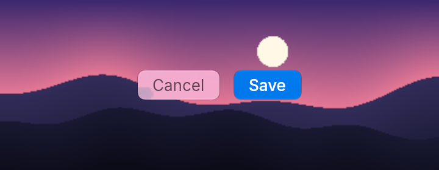
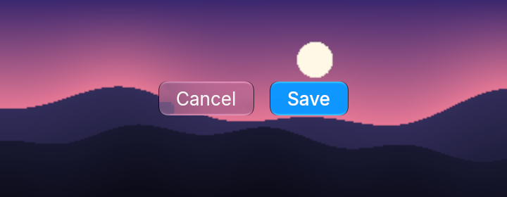
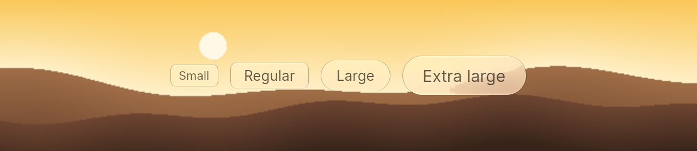
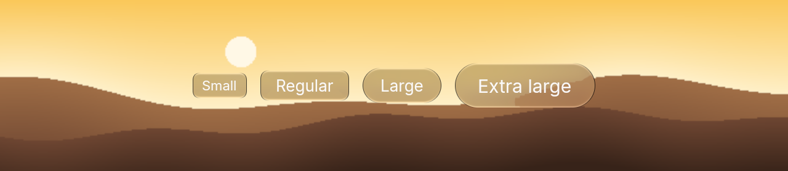
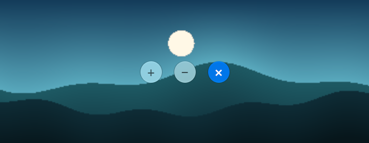
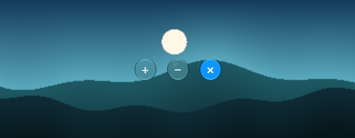
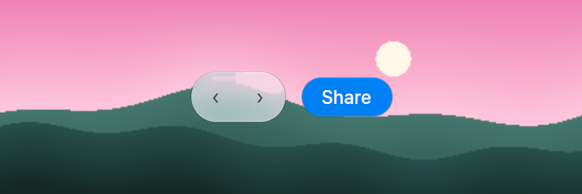
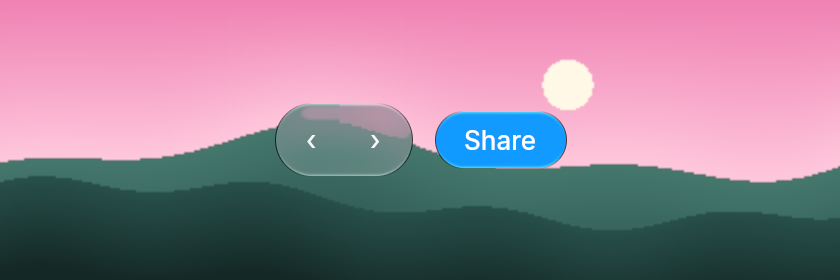
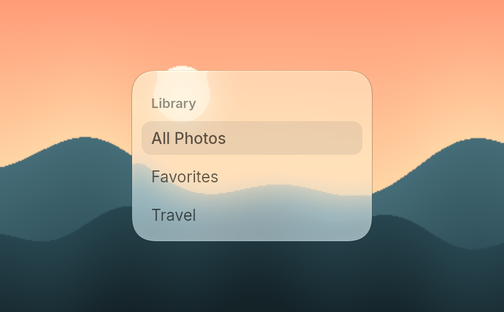
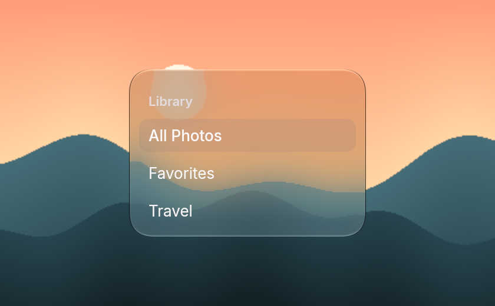

Buttons and toolbars
Buttons are glass. They frost whatever is behind them, so they look right over a photo, a gradient or your own content, and they are less useful over a flat color. Every example on this site is drawn by Embun's own renderer.
Button
button takes a label. on_press sets the message to send. prominent tints it with the accent color for the main action in a view.


fn button_basic(_theme: &Theme) -> Element<Msg> {
row()
.gap_3()
.child(button("Cancel").on_press(Msg::Cancel))
.child(button("Save").prominent().on_press(Msg::Save))
}Sizes
ControlSize has four sizes: Small, Regular (the default), Large and ExtraLarge. Their heights follow the buttons in macOS 27.0.1.


fn button_sizes(_theme: &Theme) -> Element<Msg> {
row()
.gap_3()
.items_center()
.child(button("Small").size(ControlSize::Small).on_press(Msg::Save))
.child(button("Regular").on_press(Msg::Save))
.child(button("Large").size(ControlSize::Large).on_press(Msg::Save))
.child(button("Extra large").size(ControlSize::ExtraLarge).on_press(Msg::Save))
}Icon buttons
An icon button is round and shows a glyph. Give it a label, because a screen reader has nothing else to read out.


fn icon_buttons(_theme: &Theme) -> Element<Msg> {
row()
.gap_3()
.child(icon_button("+").on_press(Msg::Save).label("Add"))
.child(icon_button("−").on_press(Msg::Cancel).label("Remove"))
.child(icon_button("×").prominent().on_press(Msg::Cancel).label("Close"))
}Toolbar
toolbar_group joins its items into one glass pill, the way macOS groups back and forward. Put other buttons beside it.


fn toolbar(_theme: &Theme) -> Element<Msg> {
row()
.gap_3()
.items_center()
.child(
toolbar_group()
.child(toolbar_item("‹", Msg::Back).label("Back"))
.child(toolbar_item("›", Msg::Forward).label("Forward")),
)
.child(button("Share").size(ControlSize::Large).prominent().on_press(Msg::Share))
}Sidebar
sidebar is a glass panel with a heading and rows. Pass true to sidebar_item for the selected row. Give each row a key so Embun keeps its hover and press state when the list changes.


fn sidebar_list(theme: &Theme) -> Element<Msg> {
sidebar()
.w(200.0)
.child(sidebar_heading("Library").text_color(theme.secondary_label()))
.child(sidebar_item("All Photos", true, Msg::Pick(0)).key("all"))
.child(sidebar_item("Favorites", false, Msg::Pick(1)).key("favorites"))
.child(sidebar_item("Travel", false, Msg::Pick(2)).key("travel"))
}Glass over glass shows nothing, because there is nothing behind it to frost. Put glass buttons on content, not inside another glass panel.